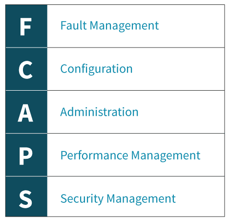
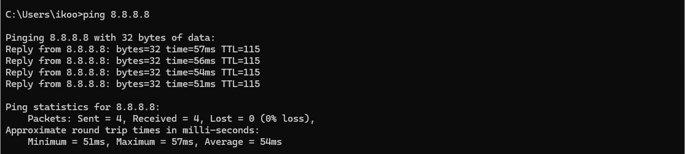
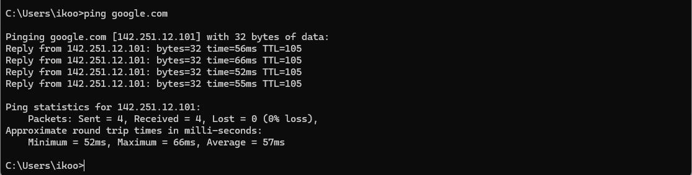
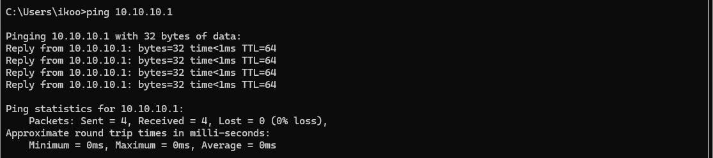

Di zaman digital saat ini, jaringan komputer memiliki peran krusial dalam mendukung berbagai kegiatan, seperti komunikasi, perdagangan, pendidikan, hingga layanan pemerintahan. Agar jaringan dapat beroperasi secara optimal dan stabil, dibutuhkan suatu mekanisme pengelolaan yang dikenal dengan istilah manajemen jaringan. Lalu, apa yang sebenarnya dimaksud dengan manajemen jaringan, dan mengapa perannya begitu vital dalam dunia modern?
1. Definisi Manajemen Jaringan dan 5 Komponen FCAPS
Definisi Manajemen Jaringan:
Manajemen jaringan adalah proses pengelolaan, pemantauan, dan pemeliharaan infrastruktur jaringan komputer agar tetap berjalan dengan optimal, aman, dan tersedia setiap saat. Ini mencakup pengawasan perangkat jaringan (seperti router, switch, dan server), serta penanganan masalah, konfigurasi, kinerja, dan keamanan.
Komponen Utama Berdasarkan Kerangka FCAPS: FCAPS adalah akronim dari lima fungsi utama manajemen jaringan:
- F – Fault Management (Manajemen Kesalahan): Mendeteksi, mengisolasi, dan memperbaiki masalah jaringan agar layanan tetap berjalan.
- C – Configuration Management (Manajemen Konfigurasi): Mengelola pengaturan dan perubahan konfigurasi perangkat jaringan.
- A – Accounting Management (Manajemen Akuntansi): Melacak penggunaan sumber daya jaringan untuk tujuan pelaporan atau penagihan.
- P – Performance Management (Manajemen Kinerja): Memantau dan mengoptimalkan performa jaringan, seperti kecepatan dan latensi.
- S – Security Management (Manajemen Keamanan): Menjaga jaringan dari akses tidak sah dan serangan siber.
2. Tujuan Utama Manajemen Jaringan dan Contoh Penerapannya
Tujuan Utama Manajemen Jaringan:
Menjaga keandalan, efisiensi, keamanan, dan ketersediaan jaringan agar bisnis atau organisasi dapat beroperasi tanpa gangguan.
Contoh Penerapan di Dunia Nyata:
Sebuah e-commerce seperti Tokopedia memiliki ribuan transaksi setiap detik. Untuk menjaga agar transaksi tidak gagal karena gangguan jaringan, tim IT mereka menggunakan tools manajemen jaringan seperti Nagios atau Zabbix untuk:
- Memantau performa server 24/7
- Memberi notifikasi otomatis saat terjadi gangguan
- Mengatur ulang konfigurasi jika ada perangkat yang gagal
Ini membantu agar sistem tetap online dan pelanggan tetap bisa berbelanja tanpa hambatan.
3. Pentingnya Fault Management dan Contohnya
Mengapa Fault Management Penting:
Karena sistem jaringan sangat krusial bagi kelangsungan layanan digital, *Fault Management* sangat penting untuk *mendeteksi dan memperbaiki gangguan dengan cepat*, mencegah kerusakan lebih lanjut, dan meminimalisir waktu downtime.
Contoh Situasi Penggunaan Fault Management:
Dalam sebuah rumah sakit, jaringan digunakan untuk sistem informasi pasien, komunikasi antar dokter, dan perangkat medis. Jika tiba-tiba jaringan server laboratorium gagal berfungsi, sistem Fault Management akan:
- Mendeteksi adanya gangguan (misalnya server overload)
- Mengirim alert ke tim IT
- Menyediakan data log untuk analisis cepat
- Mengaktifkan prosedur failover jika ada
Dengan demikian, layanan medis tetap berjalan tanpa gangguan fatal.
Tugas 2
1. Jalankan perintah ping
  2. Hasil ping dalam bentuk tabel
| Alamat IP/Domain | Packet Sent | Packet Received | Packet Loss (%) | Avg. Response Time (ms) |
|---|---|---|---|---|
| 8.8.8.8 | 4 | 4 | 0 | 54 |
| google.com | 4 | 4 | 0 | 57 |
| 10.10.10.1 | 4 | 4 | 0 | 0 |
3. Monitoring dengan Wireshark
Langkah-langkah:
- Buka Wireshark.
- Pilih interface jaringan yang aktif (WiFi atau Ethernet).
- Klik “Start capturing packets”.
- Jalankan perintah ping.
- Filter dengan mengetik
icmpdi kotak filter. - Amati paket ECHO REQUEST dan ECHO REPLY.
Analisis Traffic:
Dari hasil Traffic Capture dengan Wireshark, Didapatkan hasil analisis dibawah:
- 10.10.10.4 (Komputer)
- 8.8.8.8 (Google DNS)
- 10.10.10.1 (Router)
- 64.233.170.139 (Google)
Detail Analisis:
1. 8.8.8.8 (Google DNS)
Hasil ping:
- Request: 10.10.10.4 → 8.8.8.8 (Echo request)
- Reply: 8.8.8.8 → 10.10.10.4 (Echo reply)
- TTL: 128 untuk request (Windows default)
- TTL: 115 untuk reply (setelah melewati beberapa hop)
- Sequence number meningkat: 3/768, 4/1024, 5/1280, 6/1536
- ID: 0x0001 konsisten untuk satu sesi ping
2. 64.233.170.139 (Google)
Hasil ping:
- Request: 10.10.10.4 → 64.233.170.139 (Echo request)
- Reply: 64.233.170.139 → 10.10.10.4 (Echo reply)
- TTL: 128 untuk request (Windows default)
- TTL: 105 untuk reply (setelah melewati beberapa hop)
- Sequence number meningkat: 7/1792, 8/2048, 9/2304, 10/2560
- ID: 0x0001 konsisten untuk satu sesi ping
3. 10.10.10.1 (Router)
Hasil ping:
- Request: 10.10.10.4 → 10.10.10.1 (Echo request)
- Reply: 10.10.10.1 → 10.10.10.4 (Echo reply)
- TTL: 128 untuk request (Windows default)
- TTL: 64 untuk reply (setelah melewati beberapa hop)
- Sequence number meningkat: 11/2816, 12/3072, 13/3328, 14/3584
- ID: 0x0001 konsisten untuk satu sesi ping
Kesimpulan
1. Fault Management
- Seluruh Echo Request menerima Echo Reply ➝ Menandakan tidak ada gangguan (no fault) pada jalur jaringan menuju 8.8.8.8, google.com, maupun router lokal.
- Nilai TTL pada reply yang lebih rendah dibanding request menunjukkan bahwa paket benar-benar terkirim dan melewati hop jaringan, sehingga tidak terjadi packet loss atau unreachable destination.
- Peningkatan sequence number berlangsung normal tanpa loncatan ➝ Menunjukkan tidak ada paket yang hilang atau rusak selama proses transmisi.
Berdasarkan data tersebut, dapat disimpulkan bahwa koneksi antara host lokal (10.10.10.4) dengan ketiga tujuan tidak mengalami gangguan. Jaringan berjalan normal sehingga sistem Fault Management tidak perlu mengeluarkan alarm atau notifikasi.
2. Performance Management
- Nilai TTL merepresentasikan jumlah hop yang dilewati, sehingga dapat dimanfaatkan untuk mengukur jarak logis jaringan (contohnya, TTL 128 ➝ reply TTL 115 ➝ sekitar 13 hop menuju Google DNS).
- Sequence number yang meningkat secara teratur menunjukkan konsistensi dan stabilitas proses transmisi.
- Meskipun RTT (Round-Trip Time) tidak terlihat langsung pada tangkapan ini, perkiraan RTT dapat diperoleh dari selisih waktu antara request dan reply untuk menilai tingkat latency.
Kinerja jaringan terjaga stabil dan optimal karena tidak ditemukan tanda-tanda keterlambatan, kehilangan data, maupun anomali lainnya. Berdasarkan kondisi tersebut, sistem Performance Management dapat menyatakan bahwa koneksi antar host, baik menuju target internal maupun eksternal, berada dalam keadaan sehat.